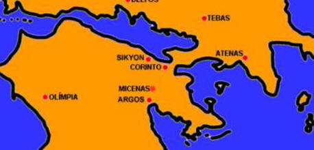

Tebas

Tebas
foi uma das cidades gregas mais importantes e antigas da
Beócia. A Beócia, emoldurada de montanhas, é
uma depressão onde as águas se juntam para formar o lago
Cópais, a nordeste
de
Atenas. Essa região, essencialmente agrícola, é
uma daquelas onde é menos
sensível a influência do mar. Em 377 a. C.
Atenas alia-se a Tebas e
organiza uma nova confederação marítima, para combater
Esparta.
Atenas, após
obter as vantagens que pretendia, resolve fazer a paz com Esparta, com o sacrifício
de Tebas.
Aproveitando o enfraquecimento do exército
de
Esparta, após a
Guerra do Peloponeso, Tebas rebelou-se e expulsou os exércitos
espartanos de seu território na batalha de Leuctras, em 371 a. C..